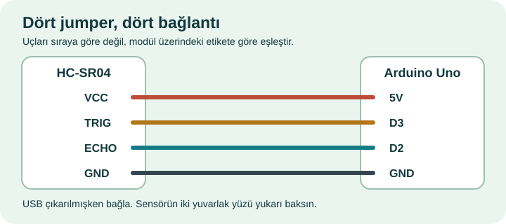

Hemen oyna · Kart gerekmez
- ZIP’i bir klasöre çıkar. mBlock 5 masaüstü uygulamasında Dosya → Bilgisayarınızdan aç (bazı sürümlerde Aç) ile Fıstık'ın İlk Uçuşu.mblock dosyasını seç.
- Sahnenin yeşil bayrağına tıkla. 1, 2 veya 3 ile bölüm seç veya ekrandaki rota kutusuna tıkla. Seçmeden başlarsan gündüz rotasında uçarsın. Boşluk ile başla; yeniden bastıkça kuş kanat çırpar. Tuşu basılı tutmak yerine bırakıp tekrar bas.
- Üç kalple başlarsın. Kemere, zemine, üst sınıra veya karşıdan gelen bir hayvana çarpınca bir kalp söner; kalan canla yeniden uçarsın. Üçüncü çarpışmada tur biter. Bitişte istersen 1–3 ile başka bir rota seç. Yeni tur için Boşluk; sensörle yeniden denemek için S.
Ses: Elini belirgin biçimde yukarı veya aşağı hareket ettirince veya klavyede yeni bir kanat vuruşu yapınca Kanat sesi çalar. Kemerden geçince iki notalı Puan zilini duyarsın. Her can kaybında Çarpma sesi gelir. Son canını kaybettiğinde çarpma sesini alçalan Düşüş ıslığı ve ardından Bitiş vuruşu izler.
Beş efekt oyun dosyasının içindedir; ayrıca ses indirmen veya Arduino’ya hoparlör bağlaman gerekmez. Sağ üstteki Ses açık / Ses kapalı düğmesi veya M ile sesleri açıp kapatabilirsin. Paketteki Oynanis.gif sessizdir.
Ses performansı: Josh Harmon (@joshplaysdrums) · TikTok.
Üç uçuş rotası
- Gündüz: Bildiğin kıyıda, sakin bir tempoyla başlarsın. İlerledikçe karşıdan kuşlar gelir.
- Gün batımı: Akşam ışığındaki kıyıda biraz daha hızlı uçarsın. Karşıdan gelen kuşlar daha erken görünür.
- Gece: En hızlı rota. Kuşlara ve kanat çırparak daha yavaş yaklaşan yarasalara dikkat et.
Üç bölümde de puanın arttıkça geçitler hızlanır. Elinin sensöre uzaklığı yalnızca kuşun yüksekliğini belirler.
Elinle uçur · Arduino Uno ve HC-SR04
Bu seçenek dört pinli HC-SR04 içindir. Dört jumper, Arduino Uno ve USB veri kablosu kullan. Kabloyu karttan çıkarıp aşağıdaki uçları eşleştir.

A0, A1 ve D11 joystick için ayrılmıştır. Bu oyunun sensör bağlantısı bu pinleri kullanmaz. Joystick takılı kalabilir. Uno 5V çıkışını breadboard’un + rayına, GND’yi − rayına bağlayıp hem sensörün hem joystick’in beslemesini aynı raylardan alabilirsin.
- Sensörü masaya sabitle; iki yuvarlak yüz yukarı baksın. Kablo bağlantıları bitince Uno’yu USB ile bilgisayara tak.
- mBlock’ta Aygıtlar → Arduino Uno → Yükle modunu seç. Bağlan ile doğru USB/COM portunu seç ve Aygıt bağlandı yazısını kontrol et. Gerekirse “Tüm bağlanabilen aygıtları göster” seçeneğini aç.
- Projedeki Upload Mode Broadcast uzantılarının yüklenmesini bekle. Eksik görünürse hem aygıt hem kukla sekmesinin uzantı merkezinden ekle. İlk kurulumda internet gerekebilir.
- Uno seçiliyken Yükle düğmesine bas ve başarı mesajını bekle. Kartta bu oyunun programı zaten varsa her turda yeniden yükleme gerekmez. USB bağlı ve mBlock Yükle modunda kalsın.
- Yeşil bayrağa tıkla, 1–3 ile rotanı seç ve S tuşuna bas. Avucunu yaklaşık 6–32 cm aralığında, iki gözün üzerinde yatay tut. Elini yükseltince kuş yükselir; indirince alçalır.
Yükle işlemi Uno’daki mevcut programı değiştirir; bilgisayarda kayıtlı mBlock projelerini değiştirmez. Yalnızca klavyeyle oynayacaksan bu adımların hiçbirine gerek yoktur.
Sensör bekleniyorsa
Önce USB bağlantısını, Yükle modunu ve programın gerçekten karta yüklendiğini kontrol et. TRIG ve ECHO’yu karıştırma; başka bir seri port ekranı açıksa kapat. Elini iki gözün üzerinde düz tut. Sinyal kesilirse oyun bekler. Ölçüm geri gelince devam edebilir veya Boşluk ile klavyeye geçebilirsin.
D tuşu ham Mesafe (cm) ve süzülmüş El yüksekliği göstergelerini açıp kapatır. Elini sabit tut: tek bir hatalı kısa yankı ham değeri değiştirebilir; süzülmüş değer son üç geçerli ölçümün ortancasıdır. Elini gerçekten indirdiğinde ikinci tutarlı örnekle kuş tepki verir. Bu oyun için ayrı bir test projesi gerekmez. Makeblock’un aygıt–kukla yayın rehberi
Sınıfta bir dakikalık deney
6 cm ve 32 cm’nin ortasını bul. Elin o yükseklikteyken kuş nerede durmalı? Önce tahmin et, sonra dene. Elini sabit tuttuğunda ve yavaşça yükselttiğinde sonuçları karşılaştır. Sonra aynı rotanın başında ve 10 puanda geçitleri izle: hangisinde tepki vermek için daha az zamanın var?